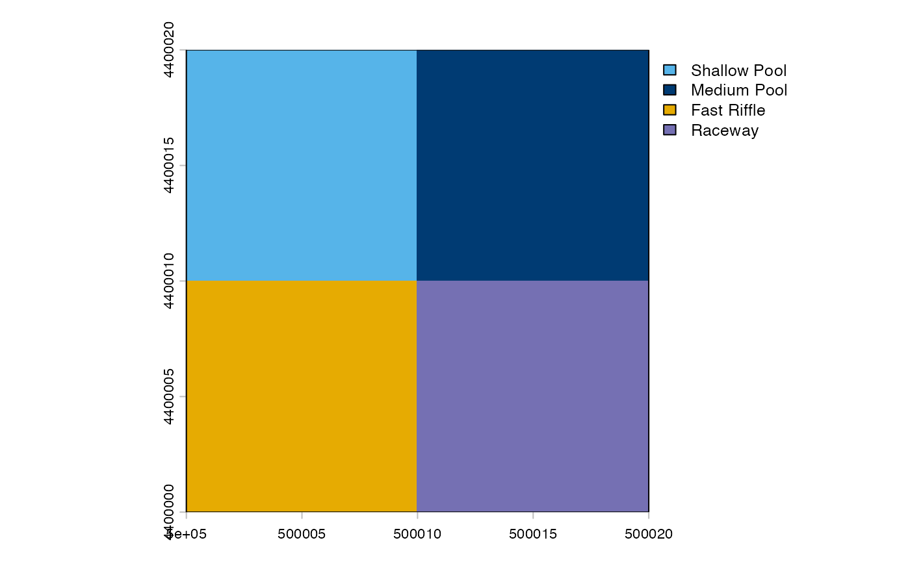

HEC-RAS depth and velocity GeoTIFF workflow
Source:vignettes/hec-ras-example.Rmd
hec-ras-example.RmdHEC-RAS workflows commonly begin with paired depth and velocity GeoTIFFs. Inspect their units, dry-cell encoding, CRS, extent, resolution, origin, and dimensions before classification. The following self-contained example stands in for file-backed inputs:
h <- mesohabitat_example_rasters()
terra::compareGeom(h$depth, h$velocity)## [1] TRUE
classes <- classify_mesohabitat_raster(h$depth, h$velocity)
plot_mesohabitat(classes)
Assigning a known missing CRS describes existing coordinates; it does
not move them. assume_crs makes that assignment explicit
and reports it. Projecting coordinates is different. When geometry
differs, align = "velocity_to_depth" uses bilinear
interpolation to project or resample continuous velocity directly to the
depth template.
An AOI can be a SpatVector or supported path. By default
both crop and polygon mask are applied:
aoi <- terra::as.polygons(terra::ext(500000, 500020, 4400000, 4400020),
crs = terra::crs(h$depth))
cropped <- classify_mesohabitat_raster(h$depth, h$velocity, aoi = aoi)
plot_mesohabitat(cropped)
For multiple dates, use unique matching names rather than relying on file order. Output can be written to a GeoTIFF and accompanied by a class-table CSV:
series <- classify_mesohabitat_series(list(example = h$depth),
list(example = h$velocity))
out <- file.path(tempdir(), "hecras_mesohabitat.tif")
write_mesohabitat(series[[1]], out, overwrite = TRUE)Determine how dry HEC-RAS cells are represented before choosing
dry_threshold; the package does not silently redefine zero
depth.